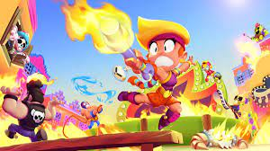

en moins de 5 min il a reussie a faire une maison
Dans ce jeu il y a plusieurs mode , si vous preféré l'avanture je vous conseilles le mode survie mais si vous preféré construire des choses je vous conseille le mode creatif.
il vous explique le mode survie
Qu'est-ce que le mode survie. Le mode de Survie est le mode de jeu principal de Minecraft, dans lequel les joueurs doivent construire et combattre pour survivre. Les joueurs doivent se construire un abri pour se défendre des Créatures qui apparaissent naturellement dans l'obscurité. Quesque le mode creatif? Le mode Créatif est l'un des modes de jeu dans Minecraft. Le mode Créatif met de côté tout aspect de survie du jeu et permet aux joueurs de construire et détruire facilement des structures.
il explique roblox
Roblox est un jeu de type sandbox. L'objectif est de construire un jeu pour qu'il soit visité par les autres joueurs. Les joueurs sont libres de construire ce qu'ils souhaitent et de partager leur création avec le reste de la communauté du jeu.
il vous explique le jeu brawl star
Brawl Stars est un jeu de combat multijoueurs et compétitif, les joueurs combattent en 3c3 dans des arènes comme dans un MOBA (Multiplayer Online Battle Arena) et y débloquent au fur et à mesure de nouveaux personnages (brawlers) et gagnent des trophées, ce qui permet de déterminer le niveau de jeu d'un joueur par ...